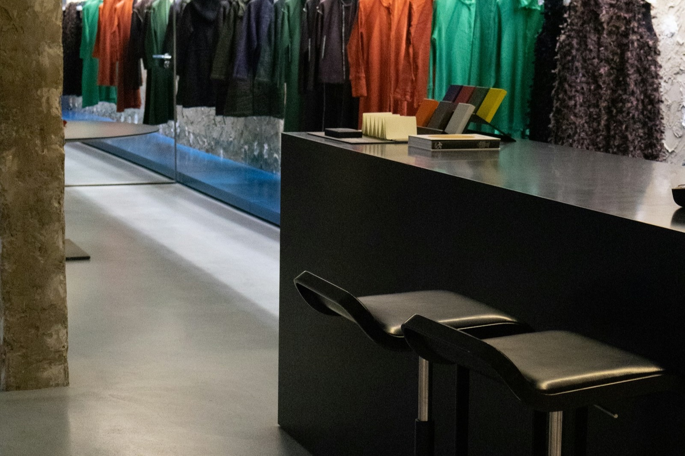

How to Improve Your Retail Store Conversion Rate
Conversion rate in physical retail is the percentage of store visitors who make a purchase. If 100 people walk in and 20 buy something, your conversion rate is 20%. Industry benchmarks for specialty retail typically fall between 15-30%, depending on location, format, and foot traffic mix.
• Specialty retail conversion typically runs 15–30% — the gap is environmental, not product or traffic
• Store atmosphere influences purchasing independent of product, price, and service (Kotler, 1973)
• Sonic congruence — music matching the brand — reduces friction on the purchase decision
• Customers who experience incongruent audio leave without buying and can’t tell you why

Staff, Layout, Checkout, and the Known Levers
Conversion rate optimization in physical retail starts with removing barriers between the customer and the purchase.
Staff engagement. Knowledgeable, approachable staff who read buying signals and offer help at the right moment can dramatically increase conversion. Undertrained or disengaged staff let customers walk out with unresolved questions.
Store layout. An intuitive layout guides customers to high-value areas and reduces decision fatigue. Poorly designed layouts create confusion, dead zones, and premature exits.
Checkout experience. Long lines, complicated payment processes, and friction at the register cost sales. Mobile checkout, fast-lane options, and well-positioned registers keep the purchase momentum going.
Visual merchandising. Clear pricing, attractive displays, and logical product grouping reduce the cognitive effort required to decide. The less work a customer has to do to understand what they're looking at, the more likely they are to buy.
These four levers address the rational dimension of the purchase decision. But purchasing decisions in physical retail have a significant emotional and environmental component. A customer can find the right product, get helpful service, encounter no checkout friction, and still walk out if the store just doesn't feel right.

Environment as Conversion Factor
The concept of store atmosphere has been studied in retail research since Kotler's 1973 paper on atmospherics. The finding has held up for five decades: the ambient environment of a store influences purchasing behavior independent of the product, the price, and the service.
Kotler (1973), confirmed for 50+ years: Store atmosphere influences purchase behavior independent of product quality, price, and service level. Sound is the most pervasive atmospheric variable — it reaches every corner and operates below conscious attention.
Sound is the most pervasive atmospheric variable. It reaches every corner of the store. It operates below conscious attention. And unlike visual merchandising, which the customer engages with voluntarily, music is ambient by definition. The customer can't choose not to hear it.
When the music matches the store's brand positioning, customers experience what researchers call atmospheric congruence. The store feels right. Everything aligns. That feeling of alignment reduces the psychological friction of the purchase decision. The customer doesn't think "this music is making me want to buy things." They think "I like being in this store." The purchase follows.
When the music is incongruent, or when there's no music at all, customers experience a low-level environmental disconnect. The store feels off in a way they can't articulate. Dwell time drops. The threshold for deciding to buy rises. Customers who would have purchased in a congruent environment walk out.
No customer tells you "I left because your music felt wrong." They just leave. The disconnect registers as a vague sense that the store isn't quite right — and that feeling is enough to kill the purchase.
The conversion impact is hard to measure with a playlist swap, because you can't control for all the other variables that affect daily sales. This is where the control store methodology matters. If you can compare two similar periods, or two locations, with different sonic strategies while holding other variables constant, you can isolate the music effect.
Conversion Through Sonic Congruence
Entuned generates music tailored to your store's brand profile, customer demographic, and target outcome. For conversion, the primary lever is congruence: making the sonic environment match what your customer expects to feel in your store.
During the onboarding process, you define your brand's positioning and your target customer. Entuned uses those inputs to generate music that fits, with tempo ranges, genre characteristics, production qualities, and lyrical themes that reinforce your brand identity rather than contradicting it.
The Move outcome mode targets conversion specifically, combining brand-congruent sound design with moderate energy levels and lyrical content oriented toward confidence and decisiveness. The goal is to bring customers from browsing state to buying state without making the environment feel pushy or sales-driven.
Because Entuned generates new music weekly, the congruence stays fresh. A curated playlist from 2024 might have fit your brand when you made it, but every song that ages out of relevance degrades the atmospheric match. Generated music doesn't have that problem. Every batch is produced for your brand, now.
Start with Entuned Free. Build sonic congruence in your store.
Start Free